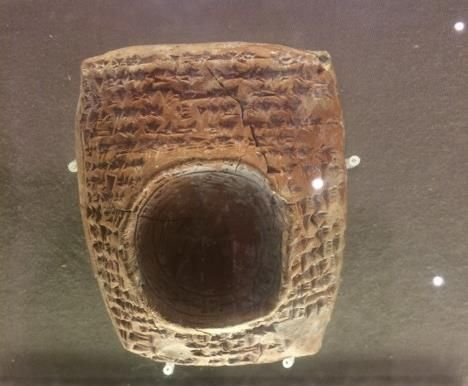
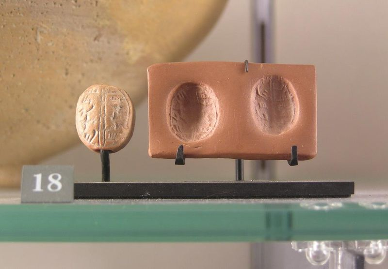
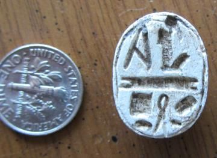

Think of how disoriented and isolated Nephi must have felt. With respect to the people living in the world that Lehi and his family left, Nephi and his people were out in the middle of absolutely nowhere. As far as they knew, they were living on an island of the sea and Nephi, of course, knew that Isaiah recorded the promise that God would not forget even the people on the isles of the sea. At this point in time, Nephi and his people had likely not yet had an opportunity to explore far enough to really know how large of a land they were inhabiting.
Nephi had built a temple. He was trying to reestablish things and bring order to his people. He must have also wondered if this work would be for naught, because he also knew that there would be great wars and that his people, the Nephites, would eventually be wiped out. This must have been a most depressing vision. Nephi was undoubtedly struggling with concerns of anonymity, of annihilation, and extinction. So, when Nephi was brought to the understanding of the voice of his people speaking from the dust, it must have brought great hope.
In 2 Nephi 26:16, Nephi had first prophesied that the writings on the plates would speak from the dust, alluding to Isaiah 29. Nephi then spent a great deal of time discussing the role the plates of his people would have in gathering Israel. The whole of chapter 27 then discusses how this prophecy about his words speaking out of the dust would be fulfilled.
Nephi quoted from a section in Isaiah 29 and explained how God would bring about the great and marvelous work that would come forth—the marvelous work and a wonder.
Isaiah prophesied that God would not forget the people whom Isaiah was addressing.
Neither would God forget Nephi and his people. Nephi understood that his posterity would have an important role to play in the history of Israel and that the record made by Nephi and his people would change the hearts of the whole house of Israel. God would keep his promises and somehow this prophecy would be fulfilled, if Nephi would only keep the records and do what he was commanded to do with the plates.

Anciently, why would a scribe have a seal? When a scribe wrote an official document (such as a legal contract, a divorce decree, or a promissory note), the scribe would bind the written record, tie it up, put a lump of clay or wax on the knot, and imprint his seal in the clay or wax to indicate that the record was an official, formal, correct document.
This is how official transactions were conducted in ancient times. Notice that in 2 Nephi 27, Nephi knows that there will be a record. It will be witnessed by three witnesses, and it will be sealed, meaning that the record will not just be closed up, but that it will be preserved with seals of authority. Sealing important documents that directly affected the life of an individual was part of Nephi’s world. We can learn something from the fact that the record of the Nephites was witnessed and sealed. It is important to ascertain the attestation and testimony of those who influence us in making decisions that affect our eternal life.
Figure 1 This is a cuneiform record of a lawsuit heard before Ini-Teshub, Hittite viceroy at Carchemish (about 1270– 1240 BC). It is sealed with his large stamp seal. Photo by John W. Welch in Boston Museum of Fine Arts.


Figure 2 Example of Hebrew seal, belonging to a servant of King Hoshea, King of Judah, from the 7th– 8th centuries BCE. Photograph by John W. Welch in Louvre Museum, Paris.
Figure 3 Example of Egyptian seal scarab from the 7th– 8th centuries BCE. Photograph by John W. Welch.
There are many, many ways to know that the Book of Mormon is true—hundreds of ways, I would say. Of course, they all are ultimately grounded in knowing that the Book of Mormon is true through prayer and study.
Isaiah prophesied, in chapter 29, that the Book of Mormon would come forth out of the ground and that it would be a marvelous work and a wonder. Following general rules of English, the King James translators, and maybe Tyndale before them, did not like repetition of the same word. The phrase “a marvelous work and a wonder” sounds better in English than “a miraculous miracle and a miracle.” Those who speak English prefer the use of synonyms because we don’t like redundancy. We strive for variation so it does not just sound like we are saying the same thing over and over again. But in many ancient languages, especially in Hebrew, using the same root over and over again was good style. When Lehi stated, “I dreamed a dream,” he was using a form that is called “cognate accusative.” What else do you dream? You might just say, “I dreamed,” and that would get the job done in English. Even though you would flunk English by using such a repetitive phrase today, the idea of repetition was a positive thing in ancient languages. It was considered to be good style.
What was Isaiah really saying in Isaiah 29? Isaiah stated that the record that would come forth was going to be a miraculous work and a miracle. In other words, the book would be a really big miracle—a double miracle—a miracle squared. It was not enough to simply say, “It is going to be amazing.” Isaiah wanted to express that it was going to be “miraculously amazing.”
As you go through the Book of Mormon this year, I hope you will come to see its amazing qualities in so many different ways. One of the things that makes the book miraculous is that it has so many features and qualities. In the past, I have tried to list some of these. I do not know if you have a list of your own. Many of these words end in “-ity” and some of them end with a “-y.” For example, there are things in the Book of Mormon that miraculously manifest its antiquity, and its use of cognate accusatives is one of them. The list of its amazing characteristics is long. This book manifests variety, simplicity, clarity, profundity, sagacity, objectivity, spirituality, practicality, reliability, creativity, maturity, artistry, spontaneity, specificity, generality, beauty, complexity, honesty, subtlety, familarity, accuracy, consistency, legality, authority, universality, reality, and sanctity. I think that’s a really big miracle!